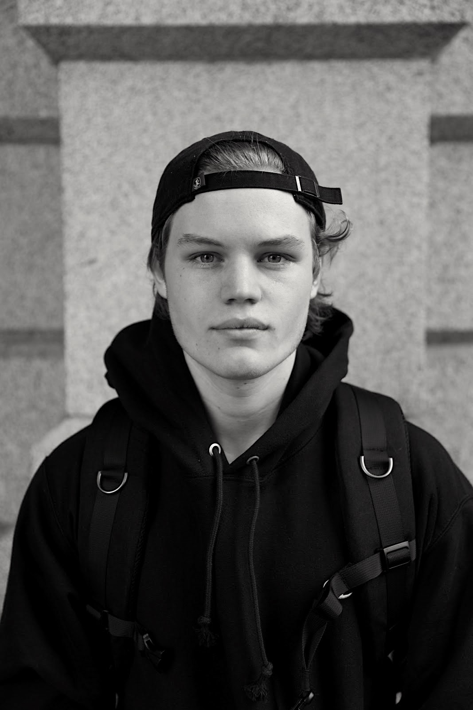

About me
Me, Myself, and I
My full name is Josh Ostrander, and I graduated in 2020 with a double major in Editing, Writing, and Media & Markeing from Florida State University.After that, I found myself moving to Atlanta and getting my Masters from the University of Florida in Digital Stratetgy. Currently, I work full-time as a Marketing Associate with Georiga Tech Athletics.
Everything Else
Outside of digital marketing and design, I love the outdoors and staying fit. I'm a bit of a film-nerd and I love discovering new places to eat around Atlanta.
Say hi